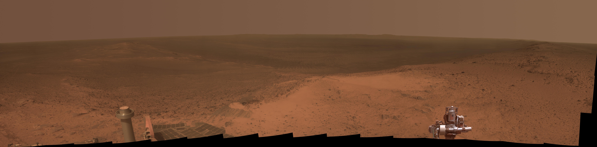

My Story: Abandoned but not Forgotten

Mission log · No. 001
MY STORY
Abandoned but not forgotten
Five robot explorers. Five endings. One question for you.
Open the log
→
Apollo 17 · NEAR Shoemaker · Opportunity · Dawn · Ingenuity
Image: NASA/JPL-Caltech/Cornell Univ./Arizona State Univ. (PIA19109)
← Back
Skip animation
Next →
This storybook needs JavaScript to turn its pages.